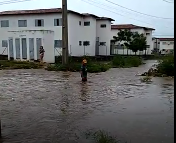

Caso clássico no bairro Torquato Neto, em dias de chuva.
Como forma de atenuar o revés exposto através da informática, pensamos em um canal de denúncias de cunho governamental. Nesse sentido, o mesmo seria um espaço virtual em que os cidadãos teresinenses poderiam abrir reclamações sobre os problemas urbanos da cidade e tais denúncias iriam ser direcionadas aos órgãos responsáveis, que devem acatar tais problemas e realizar intervenções efetivas. Por exemplo, se há um trecho muito propício a acidentes, afetando a mobilidade urbana no Jardim dos Ipês, no bairro Torquato Neto, um morador da região poderá abrir uma reclamação específica, contendo o local e o problema Dessa forma, essa denúncia será direcionada ao órgão responsável (STRANS), que poderá localizar o problema e resolvê-lo.
Com o crescimento das cidades, os problemas urbanos, como congestionamentos, poluição, ineficiência dos transportes públicos e falta de segurança, tornaram-se desafios cada vez mais complexos. Com o avanço da urbanização, encontrar soluções eficientes para esses problemas tornou-se uma necessidade urgente. Felizmente, a tecnologia tem se mostrado uma grande aliada na busca por cidades mais sustentáveis e inteligentes. Desde a mobilidade urbana até a gestão de resíduos, inovações como inteligência artificial, internet das coisas e big data estão revolucionando a forma como os espaços urbanos são administrados. Por isso, é essencial investir no uso da tecnologia como ferramenta para melhorar a qualidade de vida nas cidades, garantindo eficiência, sustentabilidade e acessibilidade para todos.